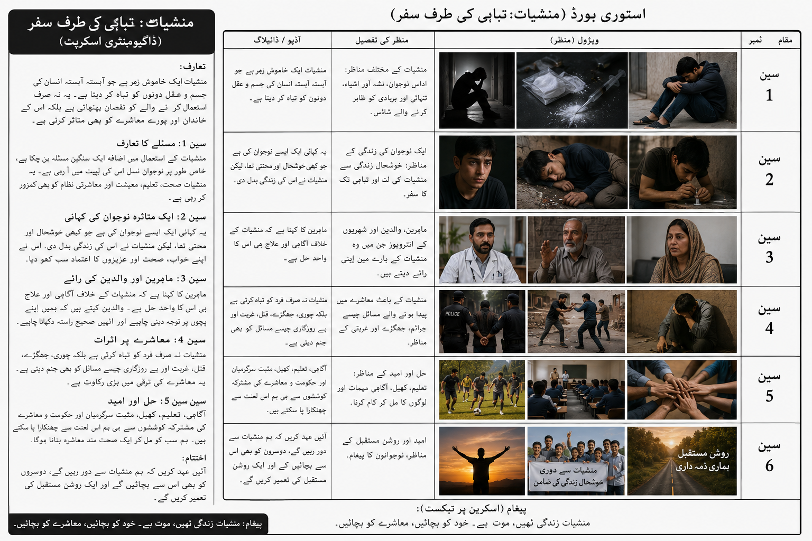

موضوع
منشیات کے نقصانات، نوجوان نسل کی تباہی، خاندان کا درد، معاشرتی اثرات اور بحالی کی امید۔
Journalism & Mass Communication Assignment
ایک مختصر ڈاکیومنٹری اسکرپٹ اور اسٹوری بورڈ جو نوجوانوں، خاندان اور معاشرے پر منشیات کے خطرناک اثرات کو واضح کرتا ہے۔
Student Portfolio
محمد افنان جرنلزم اینڈ ماس کمیونیکیشن کے طالب علم ہیں۔ یہ ویب سائٹ ان کے میڈیا پروجیکٹ، ڈاکیومنٹری اسکرپٹ، اسٹوری بورڈ، اسائنمنٹ فائل اور Google Form کو ایک منظم پورٹ فولیو کی شکل میں پیش کرتی ہے۔
 Muhammad Afnan
Muhammad Afnan
 Portfolio Photo
Portfolio Photo
Project Overview
منشیات کے نقصانات، نوجوان نسل کی تباہی، خاندان کا درد، معاشرتی اثرات اور بحالی کی امید۔
یہ ویڈیو ڈاکیومنٹری 4 سے 6 منٹ کے دورانیے کے لیے تیار کی گئی ہے۔
اسکرپٹ، ویژول پلان، نریشن، کرداروں کے ڈائیلاگ اور اختتامی پیغام پر مشتمل مکمل خاکہ۔
Storyboard

Submitted File
اس حصے میں اسکین شدہ اسائنمنٹ فائل شامل کی گئی ہے تاکہ پروجیکٹ کا مکمل مواد ایک ہی ویب سائٹ پر دیکھا جا سکے۔
PDF کھولیںFeedback Form
اس Google Form کے ذریعے ناظرین پروجیکٹ کے بارے میں اپنی رائے، مشاہدات اور فیڈبیک جمع کرا سکتے ہیں۔
Google Form کھولیںDocumentary Script
ویژول: خاموش سڑک، اکیلا نوجوان، منشیات کی علامتی تصاویر، اداس ماحول۔
"منشیات ایک خاموش زہر ہے جو آہستہ آہستہ انسان کی زندگی کو تباہ کر دیتا ہے۔ یہ نہ صرف ایک فرد کو نقصان پہنچاتی ہیں بلکہ اس کے خاندان، دوستوں اور پورے معاشرے کو متاثر کرتی ہیں۔ آج ہم ایک ایسی کہانی دیکھیں گے جو ہمیں منشیات کے خطرناک اثرات سے آگاہ کرے گی۔"
ویژول: نوجوان دوستوں کے ساتھ، ابتدا میں خوشحال زندگی، بعد میں اکیلا اور پریشان۔
"یہ علی ہے۔ ایک ذہین اور خوش مزاج نوجوان۔ اس کے خواب بڑے تھے اور مستقبل روشن تھا۔ لیکن غلط صحبت اور وقتی تفریح نے اسے ایک ایسے راستے پر ڈال دیا جہاں سے واپسی مشکل ہوتی گئی۔"
"شروع میں مجھے لگا کہ یہ صرف ایک تجربہ ہے، لیکن آہستہ آہستہ یہ میری ضرورت بن گئی۔"
"چند لمحوں کی خوشی نے اس کی تعلیم، صحت اور خاندان کے ساتھ تعلقات کو متاثر کرنا شروع کر دیا۔"
ویژول: والدین گھر میں پریشان بیٹھے ہوئے، خالی کمرہ، والدہ کی آنکھوں میں آنسو۔
"ہم نے اپنے بیٹے کے لیے بہت خواب دیکھے تھے، لیکن منشیات نے سب کچھ بدل دیا۔"
"ہم اسے بار بار سمجھاتے رہے، مگر نشے نے اس سے ہماری بات سننے کی طاقت بھی چھین لی۔"
"منشیات صرف ایک فرد کو نقصان نہیں پہنچاتیں بلکہ پورے خاندان کو درد اور پریشانی میں مبتلا کر دیتی ہیں۔"
ویژول: جھگڑے، جرائم کے مناظر، پولیس کارروائی، بے روزگار نوجوان۔
"منشیات جرائم، بے روزگاری، غربت اور تشدد میں اضافے کا سبب بنتی ہیں۔ جب نوجوان نشے کا شکار ہوتے ہیں تو ان کی صلاحیتیں ضائع ہو جاتی ہیں اور معاشرہ ترقی کے بجائے تنزلی کی طرف بڑھنے لگتا ہے۔"
"اگر نوجوان نسل نشے کی طرف چلی جائے تو قوم کا مستقبل خطرے میں پڑ جاتا ہے۔"
ویژول: بحالی مرکز، کھیل کود کرتے نوجوان، کلاس روم، مثبت سرگرمیاں۔
"لیکن ہر اندھیرے کے بعد روشنی بھی ہوتی ہے۔ مناسب رہنمائی، خاندان کی حمایت اور علاج کے ذریعے نشے کا شکار افراد دوبارہ ایک بہتر زندگی کی طرف لوٹ سکتے ہیں۔"
"میں نے اپنی غلطی کو تسلیم کیا اور نئی زندگی شروع کی۔ آج میں دوسروں کو بھی نشے سے بچنے کا پیغام دیتا ہوں۔"
ویژول: نوجوانوں کا گروپ، سکول اور کالج کے مناظر، طلوع آفتاب، امید بھرا ماحول۔
"نشہ زندگی نہیں، تباہی ہے۔ اپنے خوابوں، اپنے خاندان اور اپنے مستقبل کی حفاظت کریں۔ منشیات سے دور رہیں اور دوسروں کو بھی اس خطرے سے آگاہ کریں۔"